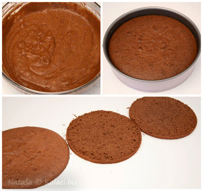
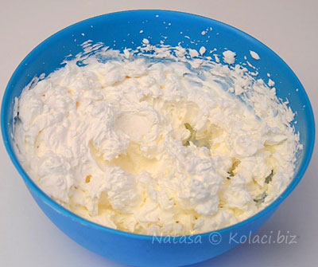
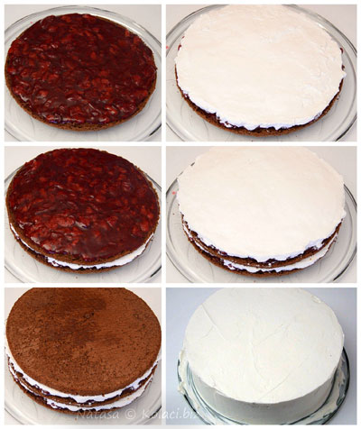
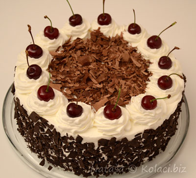

×

Švarcvald torta




Sastojci:
- 5 jaja
- 5 kašika brašna
- 5 kašika šećera
- 5 kašika ulja
- 1 prašak za pecivo
- 5 kašika kakaa
- 1 l slatke pavlake
- 500 g višanja
- još 200 g šećera
- 200 g čokolade
- 50 g gustina
- 100 g prah-šećera
Priprema:
Priprema: Umutite 5 belanaca sa 5 kašika šećera. Posebno umutite 5 žumanaca sa 5 kašika šećera, dodajte ulje, brašno i prašak za pecivo. Lagano, ne mikserom, pomešajte sa belancima i sipajte u kalup za pečenje. Peci te oko 30 minuta na 180 stepeni. Pečenu koru isecite na tri dela. Višnje stavite u pola litre vode, dodajte 200 g šećera i kuvajte 10 minuta.
Gustin razmutite u malo hladne vode i dodajte u višnje, zgusnuće se trenutno, sklonite sa vatre i ohladite. Slatku pavlaku umutite a čokoladu otopite. Sada ređajte koru, otopljenu čokoladu, fil od višanja pa pavlaku i tako redom. Premažite pavlakom i ukrasite višnjama.
Recepti Sandre Đuretić bili su među najlepšima u Lisinoj akciji "Moj lični kuvar", a objavljeni su u magazinu Lisa 14, u aprilu 2014. godine.